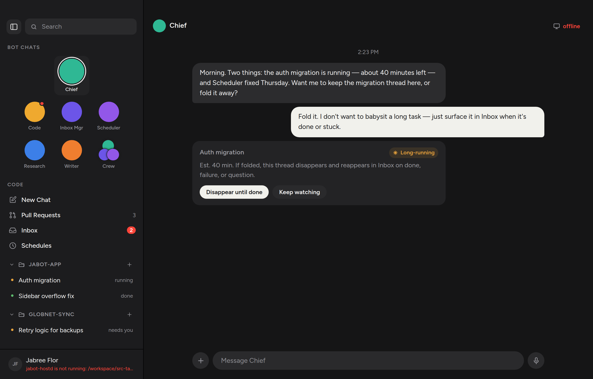
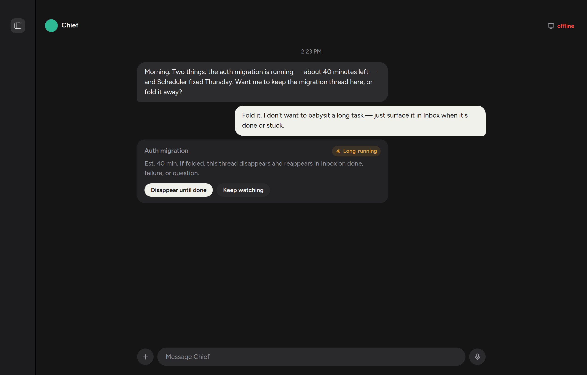

The left rail is the navigation model, and it used to be stuck open. A split-window button next to Search hides the list; the same button on a 78px strip brings it back. The chat, the Inbox, whatever you were reading, stays.


The shell owns the state. The sidebar reports the click, the same way it reports a right-click rather than folding a thread itself. jabot.sidebarOpen in localStorage remembers the choice; only an explicit 0 hides the rail on the next launch, so a corrupt store cannot trap someone without navigation.
Closed keeps a strip as wide as the overlay traffic lights. A rail that vanished would dump the lights onto the chat, and a toggle that vanished with the thing it reveals is a trap. The list and the me-row unmount rather than hiding, so Tab cannot wander into them.
Ctrl/⌘B is the same chord the rest of the desktop uses for this split. A modal already owns the keyboard, so the chord is silent while one is up.
src/components/Icon.tsx: the split-window glyph.src/components/Sidebar.tsx: the toggle, the collapsed rail, the localStorage helpers.src/App.tsx: shell state and the keyboard chord.src/styles/sidebar.css: the raised square, and the 78px closed width.Run ./scripts/verify.sh. In the app, click the toggle next to Search; the list should go and the chat should stay. Click it again, or press Ctrl/⌘B. Open New Chat and press the chord — the rail should not move until the dialog is gone.
Screenshot evidence is the real App in Chromium at deviceScaleFactor 2 against the Vite preview. Browser verification clicked hide/show, typed into the composer while closed, opened Inbox, confirmed the pane survived the collapse, opened New Chat, and confirmed the chord is silent under the dialog.